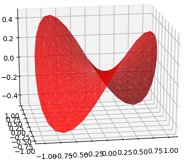
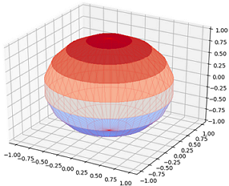

Python 3D
目录
要点: Python中的3D图形。
3D 图形示例
在win10上，使用Eclpise画的，可以鼠标拖动旋转图形。
在win10 cmd 的 python交互模式中测试通过。
1. 马鞍图
from mpl_toolkits.mplot3d import Axes3D
import matplotlib.pyplot as plt
import numpy as np
n_radii = 8
n_angles = 36
# Make radii and angles spaces (radius r=0 omitted to eliminate duplication).
radii = np.linspace(0.125, 1.0, n_radii)
angles = np.linspace(0, 2*np.pi, n_angles, endpoint=False)
# Repeat all angles for each radius.
angles = np.repeat(angles[..., np.newaxis], n_radii, axis=1)
print(angles)
# Convert polar (radii, angles) coords to cartesian (x, y) coords.
# (0, 0) is manually added at this stage, so there will be no duplicate
# points in the (x, y) plane.
x = np.append(0, (radii*np.cos(angles)).flatten())
y = np.append(0, (radii*np.sin(angles)).flatten())
# Compute z to make the pringle surface.
z = np.sin(-x*y)
fig = plt.figure()
ax = fig.gca(projection='3d')
ax.plot_trisurf(x, y, z, linewidth=0.2, antialiased=True, color="red", alpha=0.8)
plt.show()
2. 倒立桶形表面

from mpl_toolkits.mplot3d import Axes3D
import matplotlib.pyplot as plt
from matplotlib import cm
from matplotlib.ticker import LinearLocator, FormatStrFormatter
import numpy as np
fig = plt.figure()
ax = fig.gca(projection='3d')
# Make data.
X = np.arange(-5, 5, 0.25)
Y = np.arange(-5, 5, 0.25)
X, Y = np.meshgrid(X, Y)
R = np.sqrt(X**2 + Y**2)
Z = np.sin(R)
# Plot the surface.
surf = ax.plot_surface(X, Y, Z, cmap=cm.coolwarm,
linewidth=0, antialiased=False)
# Customize the z axis.
ax.set_zlim(-1.01, 1.01)
ax.zaxis.set_major_locator(LinearLocator(10))
ax.zaxis.set_major_formatter(FormatStrFormatter('%.02f'))
# Add a color bar which maps values to colors.
fig.colorbar(surf, shrink=0.5, aspect=5)
plt.show()
3. 带经纬度的圆球
import numpy as np
import matplotlib.pyplot as plt
from matplotlib import cm
from mpl_toolkits.mplot3d import Axes3D
fig=plt.figure()
ax=Axes3D(fig)
# for higher version
#ax=Axes3D(fig, auto_add_to_figure=False)
#fig.add_axes(ax)
u, v=np.mgrid[0:2*np.pi:50j, 0:np.pi:10j]
x=np.cos(u)*np.sin(v)
y=np.sin(u)*np.sin(v)
z=np.cos(v)
# 表面
surf = ax.plot_surface(x, y, z, cmap=cm.coolwarm,
linewidth=0, antialiased=False)
# 线
ax.plot_wireframe(x, y, z, color='r', linewidth=0.1)
#ax.legend()
plt.show()